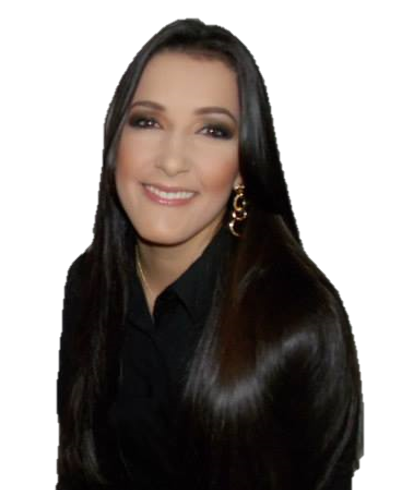

Sobre Nós
A RIA Pesquisa e Soluções é uma empresa de consultoria na área de alimentos, especializada em Assuntos Regulatórios, Mapeamento de Processos, Melhoria Contínua e Qualidade. A RIA foi pensada para ajudar pequenos e médios produtores/ Indústrias de Alimentos no cumprimento das exigências legais, a fim de garantir a produção de alimentos seguros e de qualidade. A RIA também oferece soluções em Excel, Estatística e tratamento de dados, além de planejamento de experimentos.
Consultores
José Pedro Wojeicchowski
Amanda Tais da Cunha
- 
- Engenheira de Alimentos
- Tecnóloga em Gestão de RH
- Especialista em Qualidade
- Especialista em Lean Six-Sigma
Onde estamos
Nosso escritório está localizado em Ponta Grossa - PR.